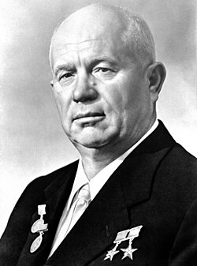

Clanek
Nikita Sergejevič Chruščov (někdy nesprávně Chruščev; rusky: zvuk Никита Сергеевич Хрущёв, 15. dubna 1894 Kalinovka – 11. září 1971 Moskva) byl sovětský politik, v letech 1953 až 1964 první tajemník Komunistické strany Sovětského svazu a v letech 1958 až 1964 předseda Rady ministrů. Jako vůdce Sovětského svazu ohromil svět odsouzením svého předchůdce Josifa Stalina, kampaní destalinizace a zahájením karibské krize v roce 1962.
Никита Сергеевич Хрущёв

1. první tajemník Komunistické strany Sovětského svazu
Ve funkci
září 1953 – 14. října 1964
vytvoril J.S